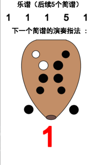

平台介绍
平台能够实现哪些功能？
• 分别实现了吹奏乐和打击乐的虚拟演奏。
• 实现了简单的曲谱识别和演奏提示功能。
• 用户可以在“乐器库”了解相关乐器的基本操作。
• 实现了简单的曲谱识别和演奏提示功能。
• 用户可以在“乐器库”了解相关乐器的基本操作。
如何使用这些功能？
• 在“虚拟吹奏乐下载”、“虚拟打击乐下载”界面分别下载吹奏乐和打击乐的演奏平台
• 分别按照教程进行使用
• 如有需要可以点击“帮助”联系我们
• 分别按照教程进行使用
• 如有需要可以点击“帮助”联系我们
平台界面以及各部分含义？
平台界面主要分为“音调显示”“动作捕捉”“演奏提示”三大部分
一、音调显示
• 实时显示用户演奏乐音的音调。在声音图像中，红线表示声音阈值，超过红线的声音将被认证为有效声音

二、动作捕捉
• 动作捕捉：平台将利用摄像头捕捉您的手势来识别演奏的音符并在屏幕上实时显示三、演奏提示
• 演奏提示：系统将自动提示后续5个音符及下一个音符的演奏手势
简谱识别
一、图像预处理与音符定位
系统首先对用户上传的乐谱图片进行预处理，以清除噪声并提高图像清晰度。然后，利用
先进的音符搜索算法和深度学习模型，系统能够精准地定位乐谱中的音符信息，并从图像中提取音符。
二、音符识别与信息转换
识别过程中，系统可以辨认从Do到Si的七种简谱符号，并准确区分音符的高低音（如图4-5）。系统会自动剔除中文及其他无关符号，只保留简谱符号，将识别出的音符信息转换为可编辑的TXT格式文件。
其中音符在文件中保存形式为两位数字，其中个位的1-7分别表示简谱符号Do到Si。十位的0表示低音，1表示中音，2表示高音。